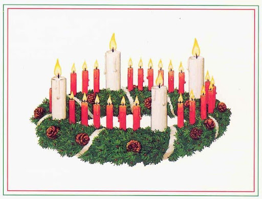

Az adventi koszorú készítésének
hagyománya csupán a XIX-XX. század
környékén terjedt el. Az első
,,koszorút” az 1839-ben egy német
evangélikus lelkész – Johann H.
Wichern – állította, amelynek alapja
egy szekérkerék volt, és 23 gyertyával
volt díszítve.
A karácsony közeledtével, a lelkész
minden nap egyel több gyertyát
gyújtott meg az ünnepre való
készülődés jegyében, a fény
növekedésének jelképeként. A mai
adventi koszorúk általában kör
alakúak, fenyőágból készülnek, és
négy gyertyával vannak díszítve, a
négy adventi vasárnapnak
megfelelően.
Minden vasárnap (vagy az azt
megelőző este), eggyel több gyertyát
gyújtanak meg a koszorún. Advent
utolsó vasárnapján mind a négy
gyertya egyszerre tölti meg a családok
otthonait, és az emberek szívét
melegséggel és fénnyel.
A katolikus egyház szokásai szerint, a
gyertyák színe lila, egy kivételével,
amely rózsaszín. A lila szín a bűnbánat
és a megtérés jelképe, a rózsaszín
Amikor a kisfiú felnőtt, üzleti
vállalkozásba kezdett, és
hagyományos, házikó alakú adventi
naptárakat kezdett el készíteni az
1900-as évek első felében, amelynek
mind a 24 ablaka egy-egy édességet
rejtett.
Az utóbbi évtizedekben az adventi
naptáraknak is számos modern
változata terjedt el, amely már nem
csak csokoládét és cukorkákat, hanem
apróbb ajándékokat is rejt magában, a
gyerekek legnagyobb örömére.
pedig a közelgő örömünnepet
szimbolizálja. Ezekhez a gyertyákhoz
többféle szimbólumot is társítanak,
mint például a hit, remény, szeretet,
öröm, illetve a katolikus szimbolika
szerint egy-egy személyre vagy
közösségre is utalnak, mint Ádám és
Éva, a zsidó nép, Keresztelő Szent
János és Szűz Mária.
Ezek a hagyományok az utóbbi időben
sokat változtak, és ma már igen
sokféle színű gyertyával díszítik az
adventi koszorúkat. Nagy
népszerűségnek örvendenek az
egyszerű szalmakoszorúk, vagy a
mohával bevont változatok is, de a
különleges és egyedi díszítések is
egyre elterjedtebbek.
Sokan saját kezűleg készítik el az
adventi koszorút, így még inkább
részeseivé válnak az ünnepi
készülődés hangulatának, mások
egyszerűen csak gyertyákat gyújtanak,
koszorúalap nélkül.
Gyere és készítsd el velünk a saját
adventi koszorúdat!
Az adventi naptár hagyománya egy
német édesanyához kötődik, aki ennek
segítségével igyekezett megkönnyíteni
gyermeke számára a karácsonyi
várakozás. Egy kemény papírlapra
huszonnégy darab csokoládét tűzött és
megengedte gyermekének, hogy
december minden napján – egészen
karácsonyig – minden este megegyen
közülük egyet.